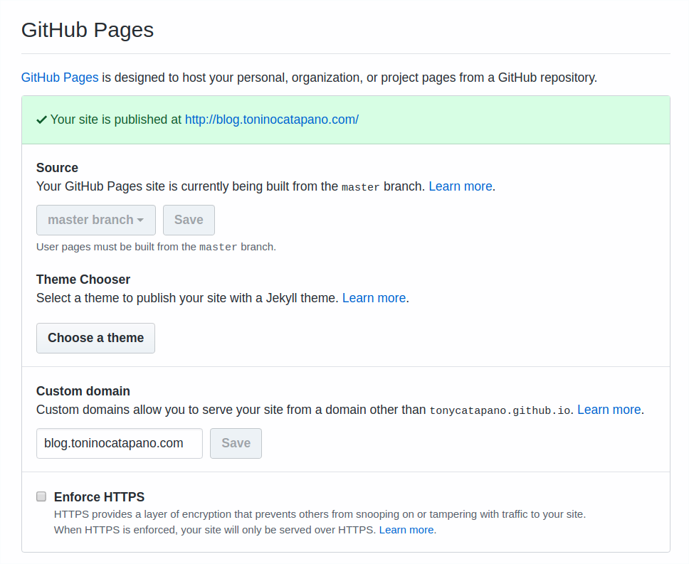

hexo
Create a simple Markdown-based blog (like this very one) without hosting and for free:
Prerequisites
Software prerequisites:
Other prerequisites:
- A Github account
Steps
1) Install Hexo Framework
2) Setup the blog:
1 | $ hexo init {blogname} |
3) Find a cool theme for Hexo and clone it in your local themes folder:
1 | $ git clone {theme-github-url} themes/{theme-name} |
4) Check the docs of your theme, it may be you have to change some settings to match your liking:
1 | $ cd themes/{theme-name} |
5) Open the _config.ym file on the root of the blog (not the theme _config.ym)
1 | $ cd ../.. |
6) change the line theme: to match your theme name:
1 | theme: {theme-name} |
7) Update blog info:
1 | title: Coding tips |
8) Create a new blog post:
1 | $ hexo new post {your-blog-post-name} |
9) Edit the Markdown file created under the source/_posts folder with you post content!
10) Go on Github and create a repo called {your_github_username}.github.io
11) Into the settings tab of the repo enable the Github pages functionality, eventually
settings up your custom domain, if you own any:

12) Set up the blog folder to point at the newly created repo1
2
3$ git init
$ git SET REMOTE
$ git push